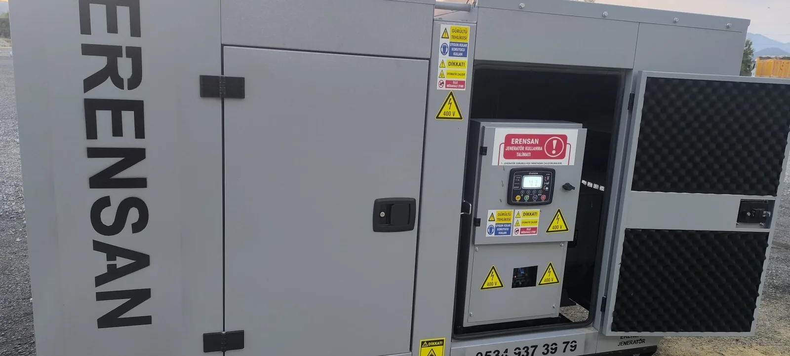

Zemin ve Taşıma
Kaide, titreşim, cihaz ağırlığı, kaldırma noktaları, kapı ve araç erişimi kurulumdan önce planlanır.
Jeneratörün yalnızca sahaya bırakılması kurulum değildir. Yerleşim, taşıma, havalandırma, egzoz, yakıt, elektrik bağlantıları, topraklama, transfer sistemi ve güvenli bakım alanı birlikte planlanır; devreye alma kontrollü testlerle tamamlanır.
Seçilen alan cihazın ağırlığını taşımalı; servis kapıları, radyatör hava akışı, egzoz hattı, yakıt ikmali ve güvenli müdahale için yeterli boşluk bırakmalıdır.
Kapalı alanda taze hava girişi ile sıcak hava çıkışı birbirini kısa devre etmemelidir. Egzoz gazı insanların bulunduğu alanlara veya hava emiş noktalarına yönlendirilmemelidir. Açık alanda ise yağmur suyu, zemin, çevre güvenliği, ses ve komşu kullanım alanları değerlendirilir.
Her tesisin yapısı farklı olduğu için sabit bir yerleşim ölçüsü vermek doğru değildir. Cihaz üreticisinin montaj talimatı, ilgili proje ve yetkin uygulayıcının saha değerlendirmesi esas alınır.

Uygulama kapsamı cihazın tipine, tesisin elektrik altyapısına ve çalışma senaryosuna göre belirlenir.
Kaide, titreşim, cihaz ağırlığı, kaldırma noktaları, kapı ve araç erişimi kurulumdan önce planlanır.
Yanma havası, radyatör hava akışı, sıcak hava tahliyesi ve egzoz güzergâhı güvenli çalışma için birlikte ele alınır.
Depo, hat, kaçak riski, dolum erişimi ve tesisin kullanım koşulları cihaz talimatlarına göre değerlendirilir.
Kablo kesiti, koruma elemanları, pano bağlantıları, faz sırası ve topraklama yetkin elektrik ekibi tarafından kontrol edilir.
Şebeke algılama, otomatik çalıştırma, kaynaklar arası geçiş ve gecikme senaryoları proje kapsamında test edilir.
Kabin, egzoz susturucusu, titreşim ve çalışma saatlerinin çevredeki kullanım alanlarına etkisi değerlendirilir.
Yük senaryosu, cihaz bilgileri, tek hat şeması, yerleşim ve saha erişimi değerlendirilir.
Mekanik yerleşim tamamlanır; elektrik, kontrol, yakıt ve egzoz bağlantıları ilgili ekiplerce uygulanır.
Yağ ve soğutma sıvısı, kaçaklar, faz sırası, gerilim, frekans, alarm ve transfer davranışı uygun koşullarda kontrol edilir; kullanım bilgileri teslim edilir.
Boşta çalışan bir cihazın normal görünmesi, tesis yükünü doğru biçimde taşıdığını tek başına göstermez. Test kapsamı tesisin riskine ve uygun test imkânına göre belirlenir.
Otomatik sistemlerde şebeke kesintisi, jeneratörün çalışması, ATS geçişi, kritik yüklerin devralınması ve şebeke geri geldiğinde dönüş sırası gözlenir. Beklenmeyen gerilim, frekans, hararet, kaçak veya alarm durumunda işlem durdurularak neden araştırılır.
Yeni cihaz seçimi için Mersin jeneratör satışı, mevcut sistemin kontrolü için Mersin jeneratör servisi sayfasını inceleyebilirsiniz.
Hayır. Montaj fiziksel ve elektriksel bağlantıları kapsar; devreye alma ise kontroller, ilk çalıştırma, sistem davranışının gözlenmesi ve teslim adımlarını içerir.
Otomatik yedek güç isteniyorsa transfer düzeni gerekir. Manuel veya bağımsız saha kullanımında çözüm farklı olabilir; tesis projesi belirleyicidir.
Evet. Üreticinin talimatına ve çalışma koşullarına uygun periyodik kontrol planı oluşturulmalıdır. Ayrıntılar için jeneratör bakımı sayfasını inceleyin.
Cihaz bilgilerini, saha fotoğraflarını, tek hat şemasını ve kullanım senaryosunu paylaşın.